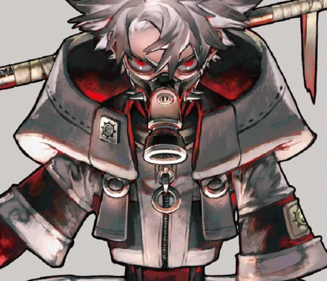
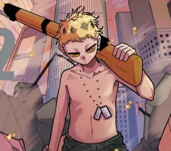
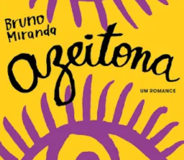
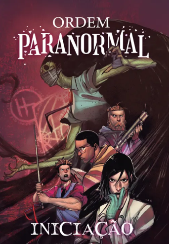

About the book
It's a series of fantasy novels about a young boy who discovers he is a demigod and must navigate the world of Greek mythology (And somehow still a virgo).
The series is written by Rick Riordan and consists of five books: The Lightning Thief, The Sea of Monsters, The Titan's Curse, The Battle of the Labyrinth, and The Last Olympian. The books follow Percy Jackson as he discovers his true identity and goes on various quests to save the world from the forces of evil.
I really enjoyed this series and would recommend it to anyone who likes fantasy novels. I'm personaly facinated by the characters and the world-building. It's a great way to spend some time!
Other books I read
Gachiakuta

It's a manga series about a post-apocaliptic world where the objects gain a soul and are deeply connected to the people that own them.
more...Sense life

It's a BRAZILIAN manga series about two ramdom guys that meet in the street and are chased by a group of people with the power of the death will of their beloved ones (They also have that power).
more...Azeitona

It's a BRAZILIAN novel about a couple of tennagers that are in a reality show, about early relationships and the problems of the early preganancies... but they're not a couple, neither of them are pregnant.
more...Ordem Paranormal: Iniciação

It's a BRAZILIAN novel about a secret organization that protects the world from paranormal threats, and the protagonists of that story are very strange and might be somehow connected to the paranormal world BY IT'S GUTS.
more...